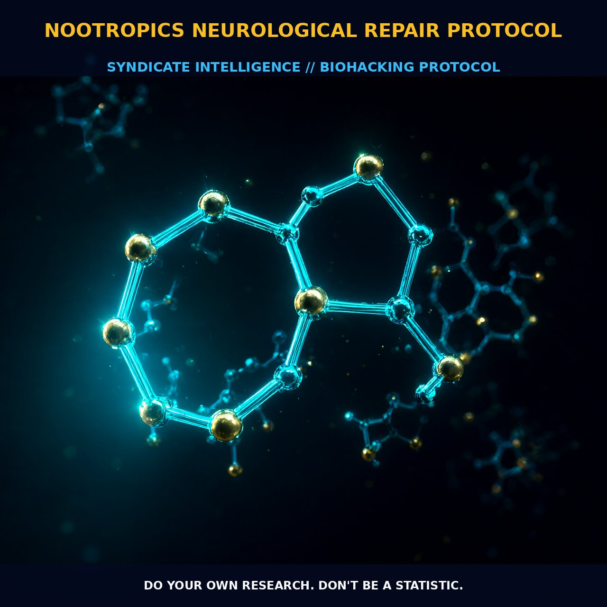

Enhancing Cognitive Function with Nootropics

1. The Mechanism
Nootropics, also known as 'smart drugs,' are a diverse group of substances designed to enhance cognitive function, particularly in areas such as memory, focus, and learning. These compounds include synthetic compounds, natural extracts, and even vitamins. The term 'nootropics' was first coined by Dr. Corneliu E. Giurgea in 1972, and it encompasses a broad range of compounds that enhance cognitive processes.
The mechanism of action for nootropics is varied, often involving the modulation of neurotransmitters such as acetylcholine, glutamate, and dopamine, as well as the enhancement of blood flow and oxygenation to the brain. For instance, some nootropics like Piracetam improve the permeability of the cell membrane, thereby enhancing neuronal communication. Others, such as Huperzine A, inhibit acetylcholinesterase, which increases acetylcholine levels in the synaptic cleft. These mechanisms collectively contribute to the observed cognitive benefits.
Nootropics also target specific neurotransmitter systems to enhance cognitive function. For example, they can modulate the NMDA receptor, which is crucial for synaptic plasticity and learning. By increasing glutamate signaling, nootropics can enhance synaptic strength and promote neurogenesis, the process by which new neurons are formed in the brain. Additionally, nootropics can influence the phosphodiesterase (PDE) enzyme family, which breaks down cyclic AMP (cAMP), a second messenger involved in many signaling pathways. By inhibiting PDEs, nootropics increase the availability of cAMP, which in turn enhances the activity of protein kinase A (PKA), a key enzyme in the regulation of synaptic plasticity and memory formation. This leads to the modulation of downstream pathways that are critical for cognitive functions such as attention and memory.
2. Biological Leverage
The biological leverage provided by nootropics is significant, as they can repair and enhance various aspects of brain function. One of the primary ways nootropics exert their effects is by enhancing neurogenesis and synaptic plasticity. Neurogenesis, the process of generating new neurons, is particularly important in the hippocampus, a brain region associated with learning and memory. By promoting the growth and survival of new neurons, nootropics can improve cognitive function and enhance the brain's resilience to stress and aging. Additionally, nootropics can increase the density of synaptic connections, which is essential for the formation and retention of memories.
Another key aspect of nootropics is their ability to modulate brain metabolism. They can enhance cerebral blood flow, thereby improving the delivery of oxygen and glucose to the brain. This increased perfusion can lead to better energy supply and waste removal, both of which are critical for optimal brain function. Additionally, nootropics can influence metabolic pathways involved in the production of ATP, the primary energy source for cellular processes. By enhancing mitochondrial function and increasing ATP production, nootropics can improve the overall energy state of neurons, thereby supporting their optimal functioning.
Furthermore, nootropics can protect against oxidative stress, a common cause of neuronal damage. They often contain antioxidants that neutralize free radicals, thereby reducing oxidative damage to cellular components. This can help preserve the integrity of neuronal membranes and other cellular structures, contributing to better cognitive performance. Additionally, nootropics can modulate the activity of enzymes involved in the metabolism of neurotransmitters, such as acetylcholinesterase and monoamine oxidase, which can enhance the availability of neurotransmitters in the synaptic cleft. By balancing these neurotransmitter levels, nootropics can improve cognitive function and support overall brain health.
3. Protocol Implementation
Implementing a nootropic regimen for neurological repair requires careful consideration of dosage, timing, and stacking. Most nootropics show cumulative effects, meaning that regular and consistent use over an extended period is necessary to achieve significant benefits. For instance, Piracetam is typically taken at doses ranging from 800 mg to 2400 mg per day, divided into 2-3 doses. It is important to start with lower doses and gradually increase to avoid potential side effects such as headaches or gastrointestinal discomfort. Other nootropics like Huperzine A, which is an acetylcholinesterase inhibitor, are usually taken in lower doses, around 50-200 micrograms per day, due to its potency.
Timing is also critical, as nootropics can have different effects depending on when they are taken. Some nootropics, such as Racetams, are best taken in the morning to enhance cognitive performance throughout the day. Others, such as Ginkgo Biloba, can be taken both morning and evening to support sustained cognitive function. Stacking nootropics, or combining them for synergistic effects, can also enhance their efficacy. For example, combining Piracetam with Choline can improve the synthesis and availability of acetylcholine, which can further enhance cognitive function. Similarly, stacking Huperzine A with Bacopa Monnieri can provide a comprehensive enhancement of cognitive performance by modulating multiple neurotransmitter systems.
It is also important to monitor individual responses to nootropics, as some individuals may be more sensitive to certain compounds than others. Regularly adjusting doses and combining different nootropics can help fine-tune the regimen to optimize cognitive performance. Additionally, it is advisable to rotate nootropics periodically to avoid tolerance and to ensure continued benefits. This rotation can involve switching between different racetams or incorporating new nootropics into the regimen.
Prostar Life Hack
Start with lower doses of nootropics and gradually increase to avoid potential side effects. For example, Piracetam can be started at 800 mg daily and increased gradually to 2400 mg daily in divided doses.
[ AUTHOR: LEAD TECHNICAL RESEARCHER ]